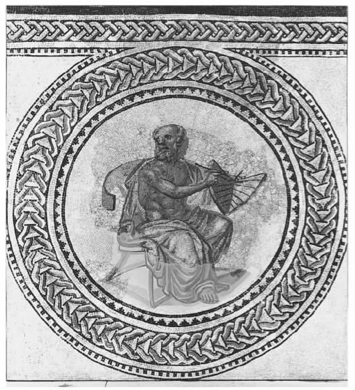
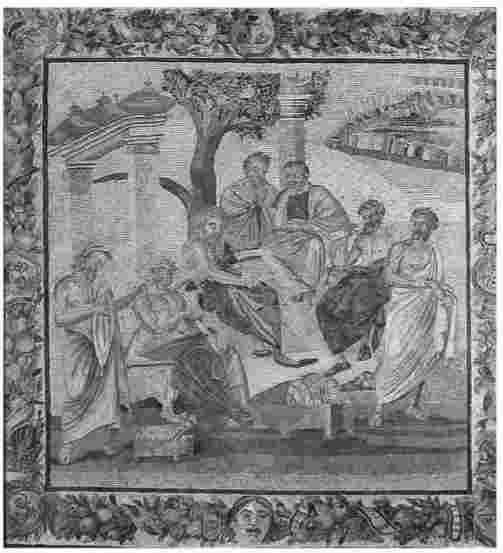
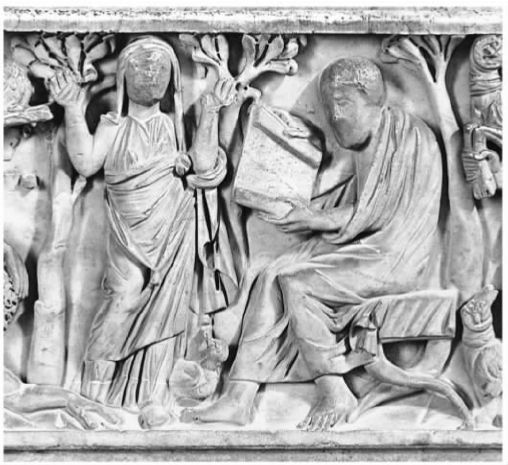

很多人都曾满怀期待地将目光转向希腊哲学的开端，结果他们却发现在此遇到的第一位哲学家，公元前6世纪的泰勒斯竟公然宣称“水是万物的本源”。任何一个教授古典哲学的人都不得不面对这一命题可能引起的迷惑。对于哲学传统来说，这是一个古怪的开端。然而6世纪发生的某些事 为哲学赢得了菲洛索菲娅或爱智慧的名号，我们可以把这看作是与哲学相关的。那么，它到底是什么呢？
正如我们所见，古代哲学门派纷繁且喜好争论，因此这一问题确实难以回答。几乎没有什么能郑重其事地把从泰勒斯到古代末期的诸多哲学家联系在一起。确实存在一个传统，但这是一个混杂、纷争的传统。
由于希腊哲学在文化上的巨大声望，它时常招人嫉恨；那些自认为在文化上被边缘化的群体有时会宣称，希腊哲学根本不具备原创性，它只不过是未经许可从别处拿来的一种传统——通常从相关的群体处拿来。早期教父们认为异教哲学家从犹太经文中窃取观点，20世纪的非洲中心主义哲学家则认为他们盗取了埃及神秘宗教的思想。但是这些观点在历史上都无从考证。
关于希腊人独创力的不同看法
“令人敬佩的是他们在智力上的充满活力和独立精神，他们借此追求连贯的体制，却没有因为亦步亦趋地抱守思想而在得出惊人的结论时畏葸不前。很可能是因为与东方宇宙学和神学的接触释放了他们的想象力；这确实给了他们许多启发。但理性是他们的原创。我们认为哲学是一个希腊式的观念。”
马丁·韦斯特，1986
“难道柏拉图不是在用希腊文写作的摩西吗？”
阿帕梅亚的努梅涅斯（公元2世纪）
“既然希腊人不但从埃及人、迦勒底人和其他外国人那里抢劫了其他学科，而且即使是现在还在劫掠彼此的文学声誉，那么如此看来说希腊人会窃取犹太人的信仰，也就不足为怪了……
希腊人在智慧原创方面一无贡献（唯一值得称道的不过是文字上的灵巧流畅），他们所有的成就都是从外国窃取，因此有理由相信希腊人意识到了犹太人的话语的力量并且对此下手……不是我把他们看作窃贼，而是他们自己的言行的确如此。”
尤西比厄斯，凯撒里亚主教（约260-339）
希腊人自己倒并不认为哲学是他们的原创；他们认为它来自希腊之外的各种不同的资源，多数来自东方。那时的希腊人并不把原创看得如此重要，他们也确实认为自己在哲学研究上表现得卓尔不群。实际上，即使我们是在读出自如晦涩的泰勒斯之笔的作品片断，也可以读到一种有趣的、与众不同的思维方式。
是什么使它（这种与众不同的思维方式）哲学化？通常这一过程最明显的特点是诉诸理性 和辩论 。即使是如此笼统的表述，这个命题也毫无疑问是正确的。哲学家以此著称：他们为自己的推论辩护，同时反驳对手；他们要求别人就其主张提供理由，同时又为自己的主张给出理由。虽然这可以把哲学与诗歌等门类区别开来，但是这并没有给出哲学活动的明确过程，或者使哲学区别于其他智力活动。理性和辩论有许多种，哪一种有价值呢？当我们审视前苏格拉底时代所产生的不同思想时，很难从中发现某种单一类型的推理，或对某种单一类型的辩论的需求。
前苏格拉底时代的第一批哲学家包括来自小亚西亚的米利都的泰勒斯、阿那克西曼德和阿那克西美尼，他们热衷于提出宇宙论，致力于对我们所居住的世界作出理性解释。亚里士多德曾敏锐地指出，他们关注其所称的物质性起源，即我们的世界是由什么组成的。对于这个问题，我们发现他们给出的答案来自水、气和“无形无质体”等方面。这种解释简约得惊人，它同时为大千世界里纷繁复杂的物理现象提出了解释。有鉴于此，这些对世界提出解释性猜想的哲学家，常常被看作科学的先驱。但是显而易见，这些纯粹推测性的理论不可能与科学探究得出的准确概念进行有效地比较。公允地说，前苏格拉底时代的哲学家们是过渡性的，他们身上有着一种类似后世的哲学和科学那种意图解释世界的智力冲动。

图7 后世所作阿那克西曼德像，所持日晷被视为其本人的发明
其他前苏格拉底时代的哲学家对科学并不感兴趣。埃费苏斯的赫拉克利特以晦涩难懂的名言警句而著称，他以火为世界万物的本原，并把这个命题与个体的自知相联系。他对这两者的描述都诉诸理性（逻各斯），这里的理性既指个体的理性，也指个体理性应该努力遵从的宇宙大道；但对于这个命题，赫拉克利特并没有提出什么理由或论据来使我们信服。科洛封的色诺芬尼以理性和辩论来消解对诸神的天真信仰。在他的学说中，我们第一次清晰地看到在用某种被其辩称为更合理的东西来质疑和取代常规信仰的过程中，理性派上了用场。他以令人信服的方式说明神人同形同性论是有缺陷的：色诺芬尼认为每个人都以自己的形象创造神的形象（甚至动物也会这样做，如果它们能做到的话）。但是他关于上帝的据称是更有理性说服力的观念是如此奇特——上帝似乎是一种球体——以致人们不得不面对这样一个问题：颠覆我们的信仰并使我们直面这一点的推理之权威何在？
一种新的思维方式？
“我一直意在证明：由于早期爱奥尼亚人的传授，一种新事物产生了——这种事物我们称之为科学……认为爱奥尼亚人的科学起源于任何一种神话观念都是大错特错的……严格意义上的科学最终把整个世界作为其研究对象，我们应该把这种对科学的准确界定归功于爱奥尼亚人。”
约翰·伯奈特，1892
“我曾力图证明哲学家是如何保有其先知特性的。为了达到对神圣感和事物真实本质的认识，他依赖对自己的理性的假定特性再外加一点宇宙意识……这种直觉化的理性取代了以往活跃在梦幻和启示视野中的非凡能力；超自然的变成了形而上学的……只有奇迹才能使6世纪的智者们清除他们头脑中所有的虚构偏见。”
弗朗西斯·康福德，1952
对于埃莱阿的巴门尼德和芝诺来说，这个问题是相当尖锐的，他们曾写下了那个时代尽人皆知的论题。巴门尼德的抽象论证得出了一个没有人能接受的结论：能够被思考和述说的对象实际上只有一个，关于使这个对象实现复数化或对其加以限定、割裂的说法都难免显得荒谬。因此我们关于客体那种形态各异、变动不居的多重性的经验完全是误导性的。芝诺推演了许多辩论，把我们对日常经验的多重性和变动性的假定归于荒谬。这样的结论让人难以接受，但问题是这些主张又难以反驳。这使人们对理性辩论产生了一丝不安：当它的结论与我们的信念相矛盾时，我们应该如何面对？
对此的回应各不相同。有些思想者继续致力于提出对世界作出解释的宏大理论，虽然他们的理论破坏了常识性信念。克拉佐美尼的阿那克萨哥拉告诉我们，当希腊人说某事物产生或消失时，“希腊人错了”；从阿那克萨哥拉的理论视角看，新产生的事物本来就已存在。与之相似，阿克拉伽的恩培多克勒、原子论者留基伯及阿伯德拉的德谟克利特都提出学说来修正我们对于现实的常识性信念，并且这些学说还会随着他们自己的假定的变化而变化。他们中没有人怀疑其推理是否可以做到这一点，也没有人充分解决如何从常识性信念的角度来看待其学说的问题——在此，德谟克利特确实发现了一个问题：我们从自己的经验走向理性表述，但这反过来又贬低了经验。
但是，另外还有一些思想家，包括某些智者，都坚持这样的观点，即哲学思辨借助人们无法驳倒的论证却得出某些令人无法接受的结论，这其中的方法有些可疑。论辩中的机敏成了令人恐惧和嫉恨的东西，它仅仅被看作是一项技巧。从这个角度看，哲学思辨和政坛、法庭上巧舌如簧的演说者的非道德精明就没有什么区别了。
这种情况显然是很混乱的，它也在某种程度上说明了为什么这些哲学家被称为“前苏格拉底”，暗示苏格拉底是一个关键点。不管这些哲学家个人取得了怎样的成就，他们并不明确地归属于一个统一传统，在此传统中推理扮演着一个清晰的哲学角色。这一点始于苏格拉底。
乍看上去，正如我们在第四章所见，苏格拉底似乎不可能是这个哲学传统的代表人物。他总是个门外汉，拒绝附和那个时代的哲学家们的所作所为。而且对于提出关于世界的理论、展示演讲术、赢得辩论等等，他一概嗤之以鼻，认为这些都是夸夸其谈，浪费时间。那么，是什么使他成为了里程碑式的哲学人物？
正如我们所看到的，苏格拉底针对他人的观点，通过他们无力回应自己的论辩来表明他们对所谈论的事物缺乏理解。要对事物有所理解，看来你必须能够对其“提供解释”，这意味着给出理由，并最终对探讨中的论题作出理性描述。但这并不容易做到，除非你扪心自问搞明白自己信念的根据是什么。因此当你要求他人为其本人的言论提供依据的时候，如果他们答不上来，或者提供的依据混乱不清、前后矛盾时，你可以说他们缺乏理解。但特别地如果你擅长这种提问（正如苏格拉底显然精于此道），你将会意识到这种追问也适用于你自身；你可能提出观点，但是这并不能说明你理解它们，因此也没有权利独断强制地推广它们，除非你能提供足够的依据来回应别人的追问。
苏格拉底以降，理性辩论成为哲学的生命线，因为只有在辩论的交锋中我们才能达成对我们所持并试图向他人展示的主张的理解。（正如我们所看到的，理解是一种知识，而我们只能认识真理；因此哲学的主要特征也可以被看作是对真理的追求。）由此，我们才能在所有哲学流派中发现对推理和辩论的重视。现在我们看到一种关于 哲学的理性和辩论的清晰意识渐渐浮现，它不在于单纯地把别人驳倒，而是与追求真理和理解联系在一起。
从外部来看，那时候和现在一样，所有的辩论看起来似乎都是咄咄逼人、毫无魅力的，对于没有哲学天资的人来说这似乎毫无意义。（有这样一则故事：一个罗马官吏把雅典所有的哲学家召集在一起，为他们的观念冲突提出调停，以便最终解决他们之间所有的分歧。）但是从此，理性思辨在哲学上的重要性则体现在它对理解的促成上。那些拒绝辩论的人，如毕达哥拉斯信徒铭记导师所言、唯导师是从，在哲学上总是被视为边缘人。伊壁鸠鲁相对不重视辩论的态度也招致了其他哲学流派的批评。
人们认为柏拉图首创了哲学学科。在此过程中他首先从苏格拉底身上继承了如下两点：重视辩论对理解的关键作用，以及在多种问题上的积极看法。柏拉图还加入了另外重要的三点：一是系统，即多种观点可以形成一个整体；二是把哲学看作是自觉地有别于其他思维方式的学科；三是把哲学作为一个研究学科加以制度化。
在古代世界中柏拉图被看作是一位关键性的人物，他是第一位有心使自己的观点系统化的哲学家，他把极其多样的问题以一种相互论证的方式联系在一起，并且在这些问题上都有自己的见解。不知在此把柏拉图看作是先行者是否公道，原子论者德谟克利特也在一系列的问题上进行过思考，但柏拉图确实是第一位我们能读到其著作的哲学家。后世的作家认为柏拉图是历史上第一位把哲学看作是涵盖三个领域——逻辑学、伦理学和物理学——的思想体系的人。这是个时代错误，但柏拉图确实在后世思想家涉足的大部分领域中都占有一席之地。
柏拉图并没有明示，他那积极而系统的思想是如何与辩论确立理解的观念相联系的。但是他却明示后人，重要的不仅仅是观点正确，还要以正确的方式持有观点——在理性辩论的基础上理解。柏拉图是通过撰写对话集表达上述观点的，在对话集中柏拉图从来没有显身发言，这使他与他所持有的观点保持一定的距离。因为读者应该自己来思考这些观点，并检验自己对这些观点的理解。即使柏拉图对某个观点很明显地非常确定，他也不会把它强加于人。如果有读者因为柏拉图的权威而接受了某个观点，那么他就错过了其中的精华部分。这个观点必须被检验、被争辩，这样它才能被理解。
应该以一分为二的态度来看待柏拉图的遗产。他的学园在其设立的大部分时间内以柏拉图式的方法进行哲理推究，以攻击式辩论法反驳同时代人的观点，但其自身却没有立场。直到学园关闭之后，即公元前1世纪，哲学家们才开始把柏拉图自己的思想作为一个系统进行研究和提升。对柏拉图的阐释总免不了顾此失彼之虞——他或者被认为是把论证抛给别人了事，或者被认为是热衷于提出某些观念。
现代而非古代的阐释者强调柏拉图有意把哲学确立为一种独特的 思维方式。在《理想国》的结尾，当柏拉图借苏格拉底之口告诉我们，诗（或者更笼统地说是文学）和哲学长久以来就争论不休时，他似乎是在为自己的观点追根溯源。但柏拉图最引人注目的行为之一，就是以其杰出的文学天赋说明哲学是“辩证的”，一种不依赖于修辞或文学技巧的纯粹辩论。正因如此，他始终坚持，哲学这项活动不同于 其他人（如演讲家、诗人和智者）的所为。
不管这在柏拉图的作品内造成了怎样的张力，后人却在一点上得到了他的真传。后世的哲学发展了一种专业的文体风格：直截了当、明晰透彻，纯粹依靠理性辩论的力量。无须诧异的是，对于普通读者来说这索然无味，并且在为公众所创作的简易的文学化作品和以坚定不移的专业化、技术性笔调写就的“真正的”哲学著作之间，我们发现一道鸿沟渐渐形成。
这道鸿沟后来又因哲学的制度化而被进一步加深。虽然每一个时代的哲学家都根据自己所处时代的大学或学院模式对柏拉图的学园进行阐释，但我们对其组织机构所知甚少。但它是一种新事物，一所容纳像亚里士多德这样的年轻人来投身哲学的学校。他们可能学到了柏拉图的观点；他们也学会了如何辩论。亚里士多德在其人生的后期创立了自己的哲学学校，这被一些人看作是自负之举，但它确立了一种模式：独创性强的哲学家可以创立自己的学校，招收门徒和学生，这些门徒和学生会学习、深化和传播他的观点。由此，柏拉图和亚里士多德的哲学在各自学校中都拥有了一段历史；它们变成了其他哲学家研究的对象。
有了哲学学校——斯多葛学派和伊壁鸠鲁学派都以类似的原则创立——我们就会发现古代哲学家和现代哲学家的活动惊人地相似。虽然富裕的柏拉图拒绝收取学费，但是费用还是很快成为这个制度中的必要一项。入读哲学学校成为年轻男性（有时也包括年轻女子）教育的一部分。（或者，他们也可能拥有一位训练有素的哲学家作为家庭教师。）他们接受教育，以便能够理解和赏析某些重要的哲学观念，这些观念中的许多内容已经成为文化传统的一部分。在学校里，他们也在辩论技巧方面受到训练，以便在他们离校时能够掌握某些在诸如政治和法律等领域中更具实际价值的应用技能。那些最有哲学天赋并且献身于哲学研究的人会留在学校里，永远成为学校哲学团体的一部分。这听起来和当今大学中的哲学教学有些相似。（或者更像学位和分数还没有变得和文凭同样重要之前，那些不那么僵化的大学体制。）哲学是某种大学教育的一部分，这种观念一直持续到古代的晚期，历经政治和文化的巨大变迁。
这种相似还存在于哲学研究的许多具体方式中。我们发现哲学家是针对其他哲学家的论文和散文，来相应撰写自己的论文、散文以及辩论性著作的。我们还发现了对哲学先人，尤其是对柏拉图和亚里士多德的作品的评注。我们发现在同一流派中存在争执，例如关于两个同代人谁准确地理解了伊壁鸠鲁。我们还发现了针对当时其他学派的大量辩论。从风格和目标来看，这些作品和现代的哲学期刊文章以及书籍非常相似。实际上，与柏拉图的对话相比，现代的哲学学生更容易与作为哲学专业化产物的此类著作产生关联。而柏拉图的对话在形式上和任何现代哲学写作都有所差异。
由此，柏拉图之后的哲学是哲学流派史（其中有两个例外，后面我们会谈到）。这里还有一种有趣的不光彩一面——一直持续到古代晚期的对伪哲学家的抱怨，这些伪哲学家以哲学来谋取个人利益，包括在钱财方面和名誉方面。他们是一群小丑式的人物，在课堂上品行高洁，在课堂外唯利是图。这也说明古代哲学不仅是一种智力挑战，也可以为改善生活和寻找生命的意义提供切实的帮助。人们不仅希望哲学家能传播智力技能，也期待他们能在寻找美好生活的过程中躬身垂范。对于后者，如今我们更多的是在宗教或智能性更低的事务中寻求。古代的哲学家并不是提供了众多学科中的一种学科，而是提供了一种唯一可以走进他们的受众心中的学科。
虽然亚里士多德是柏拉图的学生，但从某些方面来说，他在学园之后形成的各种学派都是最不具有代表性的。这是因为亚里士多德本人兴趣极其广泛。他广泛研究、深化或创立了各类学科，从文学理论到逻辑学，从经济学到生物学。他身后所留下的论著数量庞大，其中一些是理论方面的论文，另一些则更像是研究记录。从这个角度看，亚里士多德学派和后来那些研究方向狭隘的哲学流派不同。

图8 哲学家们在一起交流、辩论
像此前的许多学派一样，斯多葛学派起于公共场所；而伊壁鸠鲁却与众不同地把他的学校置于私人居所——花园内。伊壁鸠鲁要求他的观点被不加质疑地接受并铭记，这一点也与众不同。但不久之后，伊壁鸠鲁学派及其在别处的支脉也展开了和斯多葛以及其他学派极为相似的活动——争辩与反争辩、评述经典作品、普遍延续其创立者的哲学活动。每一代学生都需要自己来重新学习和理解哲学观点，因此即使是致力于传授其创立者学说的哲学流派，也会在阐释的交锋中得以发展。此外，随着政治和社会环境的变化，出现了需要解决的新问题、需要迎接的新挑战。例如罗马征服了地中海地区后，希腊知识分子开始教化未开化的罗马人。
从公元前1世纪开始，我们发现不同学派之间持续不断的争论导致了某些混合派或“折中派”（将不同学派的观点结合在一起形成一种新的立场）的产生。安条克是当时非常有影响的一个人，他认为柏拉图、亚里士多德和斯多葛学派在许多问题上的核心观点是可以兼容的，他们之间的差异被夸大了。在哲学史上，这些流派在旨趣方面的地位往往低于那些原创思想家所创立的学派。但我们仍然能够认同其立场。一旦哲学形成了讲学的传统，不顾一切地去标新立异看起来就显得比较愚蠢，而基于已有的观点进行辩论或构建则更为合理。今天大多数哲学家都是这样做的，因此我们应该收起对此不屑一顾的态度。
在罗马共和国的晚期和罗马帝国的早期，有理由说古典哲学达到了一个全盛期。虽然这时不再有伟大的原创思想家，但各种哲学流派相互交流，兴旺繁荣。这些哲学流派把它们的观点散播到整个罗马帝国，一个严肃求学的学生有大量机会去学习和思考这些观点。（在这个时候，雅典已经失去了它从柏拉图到公元前1世纪之间一直拥有的哲学中心的地位，像亚历山大和罗马这样的城市也取得了文化上的重要位置。）在整个帝国范围内，受过教育的人都熟悉哲学、都能够谈论哲学。一种如此丰富多元的文化传统能够有如此大的影响和重要性实属罕见。古代的末期之前唯一一个重要的新流派是公元3世纪出现的对一个旧学派的重要阐释——普罗提诺以新颖和独特的方式对柏拉图观念重新思考并加以整合，这个学派我们称之为新柏拉图主义，它在以后的几个世纪中繁荣活跃。
我们前面提到的两个哲学运动出现在这种流派杂糅的局面中，它们与其说具有流派性不如说具有反流派性。
其一是皮浪的怀疑主义，正如我们在第四章所见的，这一运动与柏拉图学园的怀疑主义大相径庭。就像我们在作为主要资料来源的塞克斯都·恩披里柯的记载中看到的那样，皮浪怀疑主义在方法上是完全可行的，可以被系统化。但是就其自身来说，它想要在任何事情上确立权威都会自我拆台，甚至在皮浪怀疑主义的本质这一点上也是如此，因为这会使他认识到自己对某些信念的足够坚持，从而威胁到怀疑的定力。因此皮浪主义绝不会主张前后一致地成为一个体制化的流派。这也是为什么我们对它的传播和影响所知甚少的一个原因。
第二个“反流派”运动来自犬儒派，它起源于公元前4世纪西诺普的狄奥根尼。狄奥根尼率先垂范成为别人效仿的榜样，但他没有建立任何正式的机制。犬儒派得名于犬（在古代这是不知廉耻的象征），他们热衷于街头布道，在生活方式上公然违背社会规范，目的在于通过拒绝社会习俗来“回归自然”。尽管某些犬儒主义者的讲学方式确实不拘形式，但在哲学上它仍然只是一种吸引教化边缘群体的生活方式。犬儒主义拒绝理性辩论，认为生命中没有什么费解之处，关于人生问题的答案也很简单，因此犬儒主义永远不可能成为一种哲学流派。
很难确定作为一种鲜活传统的古典哲学终止于何时，尤其是在人们无法准确确定古代——古希腊和古罗马文化——末期为何时的情况下。当罗马帝国分裂时，东部的拜占庭帝国保持了政治和文化上的统一，并且尽管是以部分和有限的形式存在，哲学在此仍然是一种学术研究。这种统一性在西部则荡然无存，哲学文本被（部分地）保存在修道院中，但这些保存者不再是这些文本所包含的传统的一部分。甚至连写就这些作品的希腊文方面的知识也失传了。当哲学重新发展起来，这种以亚里士多德为主、柏拉图也占一席之地的传统又成为哲学的一部分，只是被纳入了一个有所差别的神学框架中。直到文艺复兴时期，人们才有可能独立地研究古代作品的文本，而对亚里士多德的研究，仍然需要同他的中世纪改造所导致的后续作用进行斗争。

图9 一名基督徒的墓碑上镌刻的图案：一位哲学家坐在一个祈祷的人身边
公元529年，基督教徒皇帝查士丁尼关闭了在雅典传授异教哲学的学校，这一年被看作是作为一种鲜活传统的古代哲学的终结点，对于这一点需要予以说明。像许多重大的历史时刻一样，这也经不起历史研究的追问。雅典早就失去其哲学中心的地位，人们不清楚除了柏拉图主义是否还有别的学派在此活跃。实际上查士丁尼也并不是关闭了哲学学校，他似乎至多不过是禁止异教哲学家讲学，这个法令似乎也并未生出实效。早在529年之前异教哲学就陷入了危机，此后只是在某种程度上苟延残喘罢了。
然而，认为是基督徒皇帝的不宽容终结了这一传统的想法也不无道理。古代世界的犹太人和基督徒总是面临这样的一种选择：或者为了忠于信仰和经文而完全排斥哲学，或者尝试至少部分地把哲学融入自己的传统中。他们这样做是通过宣称哲学是犹太教和基督教的某些深层真理的变形的发展阶段来实现的。然而，他们的方法对哲学传统不仅是选择性的，而且也彻底缩减了理性和辩论的空间，而这种理性和辩论对古代哲学家们的研究活动是如此关键。古代的犹太教和基督教作家大体上只是延续到我们手中的（部分）哲学传统的传递者，而不是参与者。基督教是被强加的唯一的世界观，在这种情况下，哲学几乎不能继续履行其对信仰进行质疑和理性思辨的使命。
自古典哲学被重新发现以来，它在西欧哲学发展史上的某些时段颇有影响，大部分时期都受到了尊崇，这些西欧国家本身即是古希腊罗马文化的继承人，并且古典哲学对那些受西欧文化影响的国家的哲学发展也产生了深远的影响，这些国家如北美和澳大利亚等。这个极为差参多态的古代传统中的不同部分在不同的历史时期成为强势话语。斯多葛学派在18世纪影响巨大，19世纪则降格为专门的研究，这与柏拉图的际遇恰好相反。有时，人们过于注重所谓伟大思想家的观点，将其当作“经典”而进行展示，却忽略了它们富有争议的背景。足够宽松的传统导致了不同的关注方向——至少在过去的三个世纪中，所有人都意识到了理性辩论对哲学理解的重要性。
但是强调理性和辩论导致了一个不幸的后果。在古代的晚期和20世纪，它有时会导致对其他哲学传统认识的简单化倾向，尤其是对与之截然不同的“东方”传统（作为“他者”）的简单化认识。东方传统不那么重视思辨，却更注重神秘主义和以非理性的方式探索智慧，这有时会使人们觉得：相对于崇尚理性的“西方”传统，东方传统是比较原始的。但是，作为回应，它还引起了另一种观点：东方传统比“西方”传统更深刻，因为这种“西方”传统以那种看起来肤浅的喋喋不休为荣。特别是在20世纪晚期，兴起了对理性及其在“西方”传统中地位的铺天盖地的抨击，而古典哲学通常是攻击（常常是偏颇的攻击）的目标。
这两种倾向都是令人遗憾的，它们带来的只是于事无补而且在很大程度上也有失真实的粗糙对比。在与印度哲学的比较中尤其如此。古代印度哲学传统广博而丰富，除了拥有倾向于神秘主义的学派和各类的唯心论以外，还包括唯物主义、怀疑主义和经验主义。印度哲学传统无论在广度还是深度上都堪与古希腊罗马哲学相媲美。然而西方人和很多印度人（他们往往都不是专家）都只强调其中与西方哲学形成对照的流派。学生们也往往认为包括印度哲学在内的“东方”哲学都是相似的，与“西方”传统迥然不同。我们尚须达成一种完全后殖民式的观点，超越“西方理性主义”和“东方神秘主义”的不实对比，从而认识到部分印度传统和西方人更熟悉的古希腊罗马传统的密切的相通之处。（例如有人认为，皮浪的怀疑主义和北印度佛教中观派具有相似性，后者的创始人龙树有可能与塞克斯都·恩披里柯是同时代人。据说，皮浪早年曾随亚历山大的军队到过北印度，另外，希腊在北印度一直有着持续的影响，由此看来双方甚至有可能在历史上曾互相影响。）
萨莫萨达的鲁西安是公元2世纪的讽刺作家，他是古典哲学传统中人，但他曾以外部人的视角看待古典哲学，我将以他的观点来结束此文。在他的作品《逃跑者》中，菲洛索菲娅提醒她的父亲主神宙斯，她被送到人间的首要目的是为了使至今还生活在无知和粗暴之中的人类能过上好一些的生活。她接着说，首先她去印度找了婆罗门，然后去了埃塞俄比亚、埃及和巴比伦，之后又去了广袤的北方地带色雷斯。最后她去了希腊，考虑到希腊人在智力上的声誉，她本以为和希腊人打交道会比较容易。但是实际情况却比她想象得要糟。在一个良好的开端之后，智者们就把哲学和——啊，诡辩混淆起来。之后雅典人又处死了苏格拉底！菲洛索菲娅喋喋不休地抱怨着之后在希腊陆续经历的不尽人意之处。她说，虽然大多数人不太了解她，但人们对她还是怀着尊重；这里有热爱真理并且献身于真理的天才哲学家，这使她不虚此行。但也有一些只盯着金钱和地位的伪哲学家给她带来耻辱，让她发狂。她需要神的帮助来改善这种状况。
不管怎么说，在古希腊罗马世界中，哲学成为了一门有着独立的实践、著作和规定的学科。相对于当代人来说，哲学在当时对于它的实践者和受众更为紧要。鉴于良善生活的重要性以及哲学在促成这种生活方面的重要作用，它被看作是常规良好教育的一种自然延伸。而我们感受更多的是在两种观点之间的张力：一种观点认为哲学使我们得以认识自身和世界；另一种观点则认为哲学重在缜密，对智力有着相当的要求。在古代世界中哲学所扮演的重要角色已经被各种其他关切和追求所替代。但哲学仍然是至关重要的，在许多方面，我们还是可以把我们的关注与古人的相联系，并且发现我们对他们的研究很自然地会导向直接的哲学活动。菲洛索菲娅的问题仍然是我们的问题；在没有神助的情况下，我们不得不自己去追求真理，去伪存真。